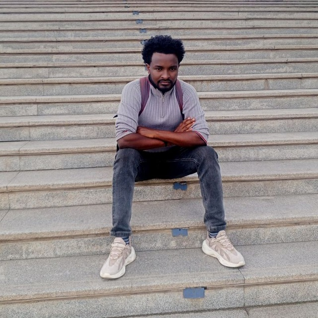

Ph.D. Candidate @ Ariel University, Israel | Exploring radiative transfer, massive binaries & dark energy | From Ethiopia to the cosmos
I am a computational astrophysicist from Alem Ketema, Ethiopia, currently pursuing a Ph.D. at Ariel University, Israel. My research bridges radiative transfer simulations and observational data to decode the violent interactions in massive binary systems and the large-scale influence of dark energy.
With a master's from Entoto Observatory (CGPA 3.98/4.00 or 9.95/10.00) and B.Sc. in Applied Physics, I've led the Physics Department at Dilla University, mentored 100+ students, and actively contributed to Ethiopian space science outreach as ESSS branch chairperson.
I strongly believe in open science and education: from teaching computational physics to organizing STEM inspiration lectures every year — the universe belongs to everyone.
Ariel University, Israel | AGASS Center
Thesis: Radiative Transfer and Instability Evolution in Colliding Winds of Massive Binaries
Supervisor: Prof. Amit Kashi
Entoto Observatory / Addis Ababa University | CGPA 3.98/4.00
Thesis: Alternative method for measuring accretion rate in Galaxies using X/O flux ratio
Supervisor: Prof. Mirjana Povic
Debre Berhan University | CGPA 3.84/4.00
Senior Project: Optimizing Wind Energy Conversion (Betz-limit)
Dilla University, Ethiopia
Dilla University
Ethiopian Space Science Society, DU
Colliding winds, radiative transfer, instability evolution in massive binary systems.
Exploring f(R,T,S) models and cosmic expansion.
Dark matter, star formation, feedback & AGN.
AGN accretion rates, X-ray/optical diagnostics.
Gaulle A., Pović M., Zewdie D. — A&A, to be submitted
Zewdie D., Pović M., Aravena M., Roberto J., Gaulle A. — MNRAS, 498, 4345
Zewdie et al. (incl. Gaulle A.) — IAU Symp. 356
📍 Open for collaborations, PhD discussions, and outreach. Feel free to reach out.